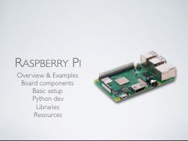

Raspberry Pi for IoT
Posted on Fri 14 December 2018 in Making, Python
I gave a presentation to the Buffalo Python meetup group in December. My talk centered around using the Raspberry Pi as a platform for IoT and embedded development. I want to share my presentation and the resources I mentioned here on my blog.
Update I presented an expanded version of this talk to the RocDev group in January. My updated slides are here as a PDF file. The links below still apply.

View/download as a PDF, PowerPoint, or Keynote.
During my talk, I referred to a bunch of sites and resources. These included:
Getting started with the Pi
- The Raspberry Pi home page
- OS downloads, including Raspbian and more
- Etcher, for copying OS images to an SD card
- The Official Raspberry Pi Beginner's Guide looks to be a good starter book for younger RPi tinkerers.
Development tools and docs
- Visual Studio Code for the Raspberry Pi
- Pi Wheels precompiled python libraries
- PiCamera docs
Blogs and tutorial sites
- Adafruit offers many great tutorials on the Raspberry Pi, Arduino, and other electronics topics. Their GitHub account has tons of free code, too.
- SparkFun has great electronics tutorials, more towards the microcontroller (Arduino) type level than the Pi.
- Pololu's blog has some info, but unlike some other vendors, their individual product listings often come with sample code and how-to information.
- The PyImageSearch blog is a great resource for OpenCV and computer vision. Adrian, the author, often includes Raspberry Pi specifics for his posts, though most can also be implemented on other platforms. I specifically mentioned his motion detection / tracking post (and its second part)
- And while we're on the topic of OpenCV, Satya Mallick's LearnOpenCV.com blog has tons of great computer vision information and he generally posts both Python and C++ code for every example.
- And humbly, my blog right here
Stores / resellers
- Adafruit - Pi, Arduino, and other electronic components
- SparkFun - Generally a bit more Arduino/microcontroller oriented components
- Pololu - Robotics, electronics, and other components.
- I usually purchase Raspberry Pis from Amazon. Just be sure you're getting the model you want (the 3B+ is the current model) since many vendors are still selling the older boards.
Note: Unlike earlier models, the 3B+ has somewhat stringent power demands. You'll need a 5v power brick that has a 2.4 amps or greater output rating. That old cell phone charger you've got probably won't cut it.
My projects
Disclosure, the code here sucks and is nothing I'd show as part of a job interview. But, it gets the job done.
- My PiLit Christmas light controller project
- And my someday-I'll-actually-finish-it automated cat feeder